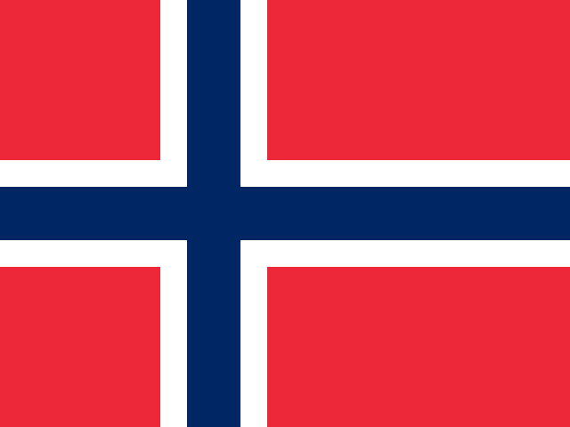

Noruega · Norway: noticias verificadas y riesgo
Europa · 4 eventos · Última cobertura 29 oct
En resumen
Noruega · Norway aparece en 4 eventos en ATHENA, en 4 de sus diez secciones. Ninguno tiene riesgo alto.
Por sección
Los eventos más importantes
- EU and Canada to bring ties to 'highest' possible level at summitRiesgo 1.2 · 29 oct
- Norway's sovereign wealth fund loses over $30 billion in 3rd quarterRiesgo 3.6 · 23 oct
- Europeans and Canadians set to get more opportunities to move across AtlanticRiesgo 0.0 · 29 oct
- Norway reports sharp rise in 'successful' cyberattacksRiesgo 2.5 · 29 oct
Países en los mismos eventos
Noticias locales de Noruega · Norway
Cargando…